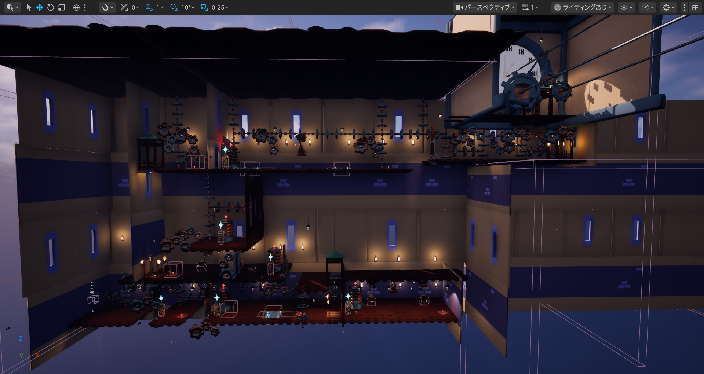
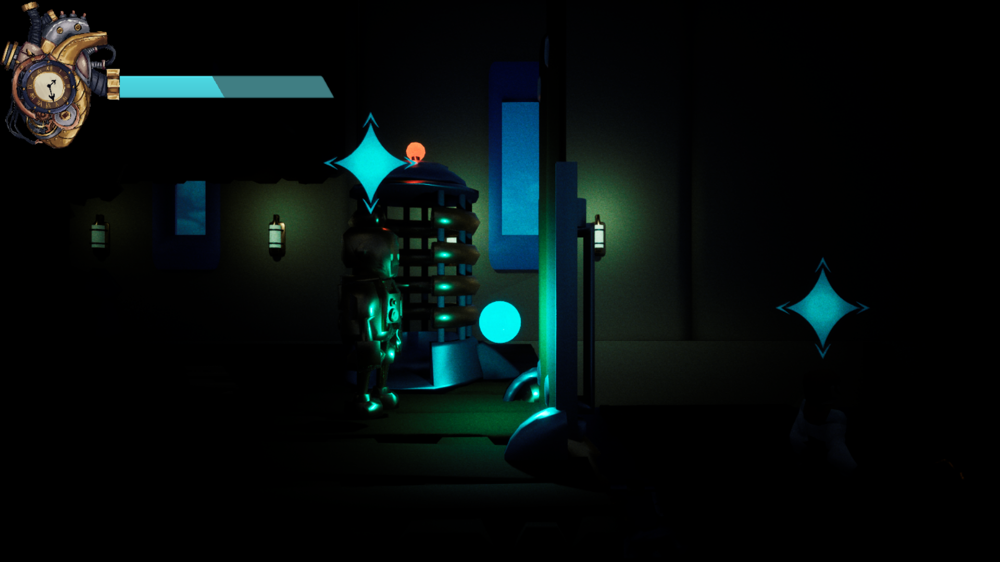
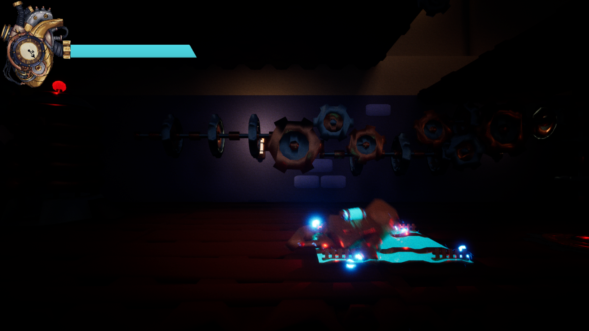
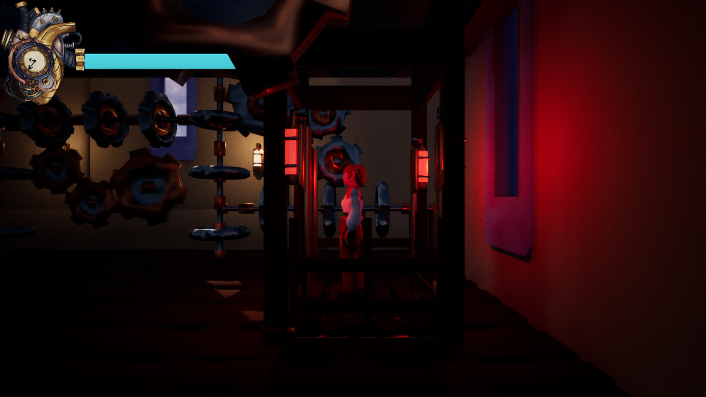
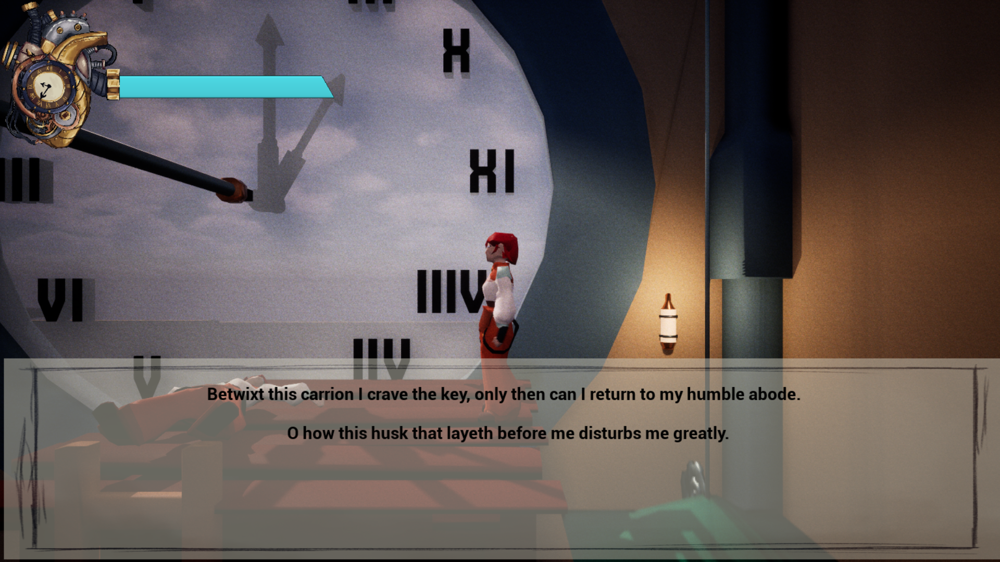
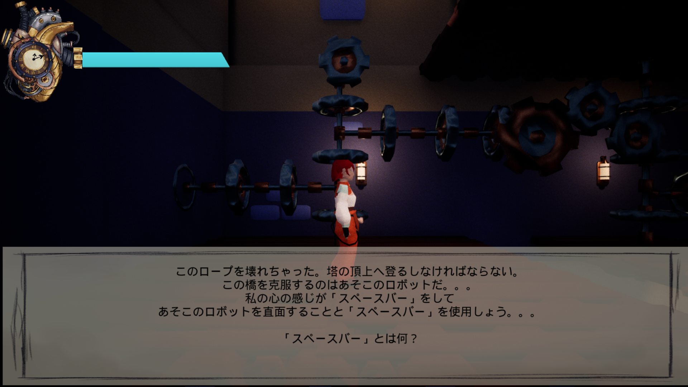

This was a two person project over a five day period. My primary roles was lead designer and developer.
Created for the Jamsepticeye games jam games jam Submission.
The game is a third person platformer sidescroller with the theme "death is an opportunity".
Possess robots, activate buttons avoid traps and navigate your player to the end.
During possession the time your soul leaves your body you lose health
The writing style in the English version was inspired by my recent trip to Stratford-Upon-Avon, the birthplace of William Shakespeare.
Alongside the writing style and language found within Final fantasy Tactics
Overview

Problems and Solutions
The Player
Mechanics
I was inspired by Masahiro Sakurai's making game videos and Ratchet and Clank's, Clank missions, I wanted to create a game with very minimal controls.
The biggest challenge is how to make a game with the primary mechanic being movement an enjoyable and also challenging experience.
I knew early on that the human player had to die in a single hit, and the robots are able to respawn.
I indicate this mechanic through dialogue when the player encoutners the first trap as a robot.
The decision for this was to implement a level of fairness for the player who has encountered their first main hazard.
Secondly it was managing the health between the three potential arch-types of characters (Human, Robot, Spirit)
When using the spirit mode to look for a robot or the human to possess, the player will have their health drained.
When they possess one of the other two types they will regain health.
This also meant I had to balance placements for the robots to help manage the player's health.
The decision for this also allows the player to also choose which robot they deal with first.
if they replay the level they might summon their spirit and navigate to the end and then work their way back to the player.
One example would be to solve all the robot puzzles and then get the human to the end, one could be to do it in the intended order.
Story and Level Structure
I had to create a playspace in which the player would have to pay attention to their surroundings and proceed with caution.
With this in mind I was trying to find a balance between making things too obvious and also too complicated for the player to achieve.
By starting the game with some dialogue from the character explaining the possession mechanic explaining the main form of progression.
I slowly implemented information about their tasks and hazards I believe this approach works well.
Due to the simplicity of the games mechanics I wanted to slowly increase the complexity of the position of robots for the player to utilise.
Gallery
Images
This is the game's Title Page

Level Overview

Summoning the spirit

Dying as a Robot

Using a lift

The ClockTower.

Japanese Version.
Gifs
Videos
Mechanics Overview Trailer
Full Playthrough
Synopsis/Demo
Our protagonist Skye finds herself scaling a clock tower, gifted to her as a way to continue her creations to benefit the city.
After a long voyage, Skye is returning to the clock tower with the soul purpose of recovering a key to her main workshop currently left in her friend Lexi's care.
However, sidetracked and performing a scheduled maintenance of the clock, she is shot dead.
Her spirit lingers on in the body of her latest robot prototype.
She must navigate the hazardous clock tower and recover the key to her workshop.
Demo Download
Itch.Io page to download demoTeam Member's Portfolios
Art:
Laura Minns: Laura Minn's Artstation
Audio:
Sourced from Pixabay